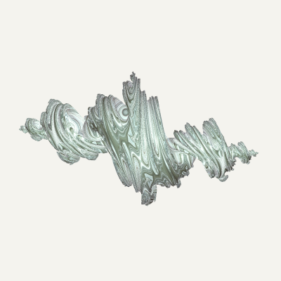
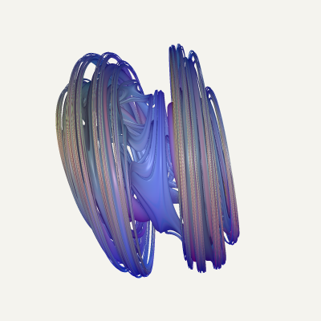
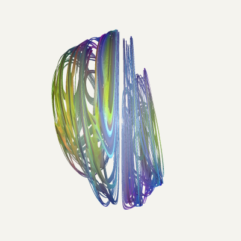
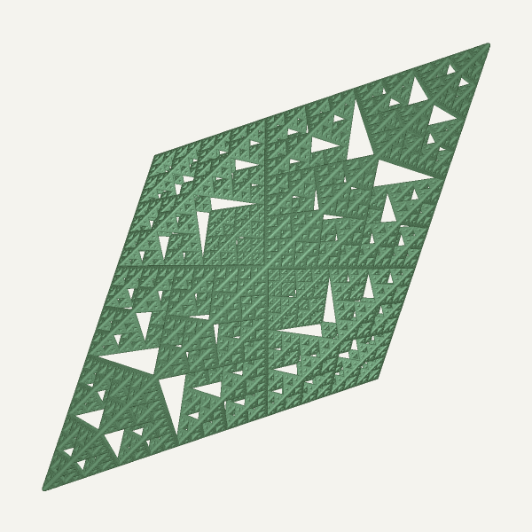

Rendering 3D Deterministic Fractals
ABOUT THE PROJECT
This is the final project I did for CS500 - Raytracing class at DigiPen Institute Of Technology - Bilbao. The objective was to create an offline raymarcher that could aproximate 3D Julia Sets and render them. For more info, please check out the report I did on here.
RESULTS



